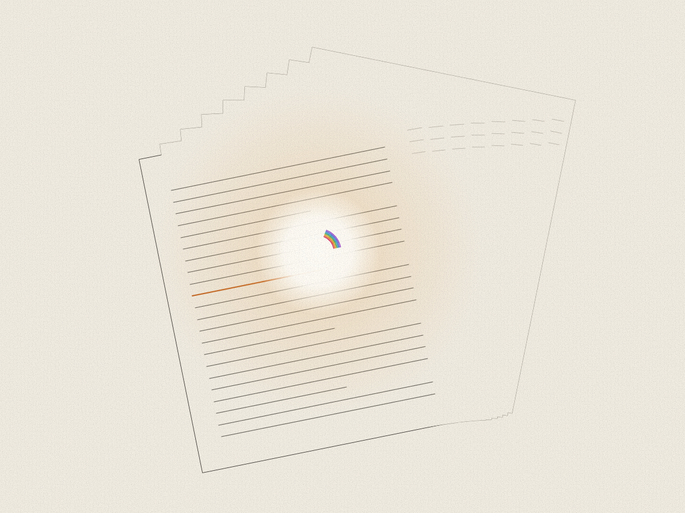
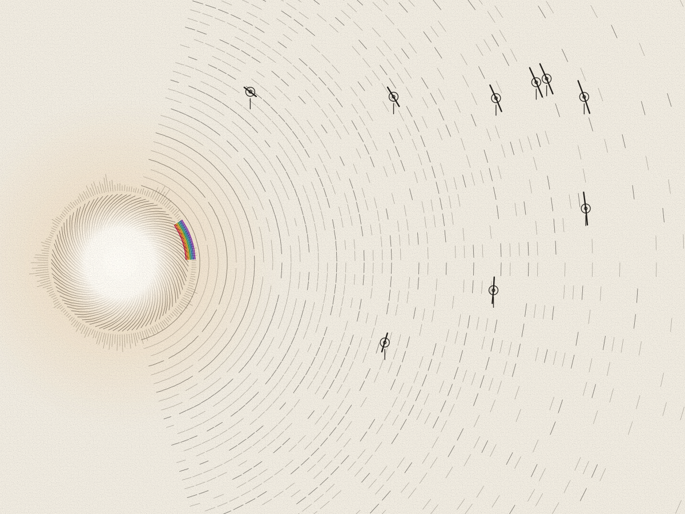
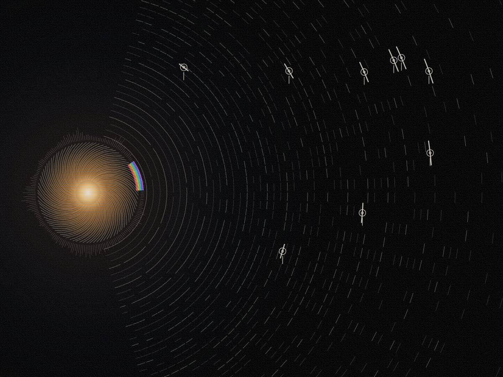
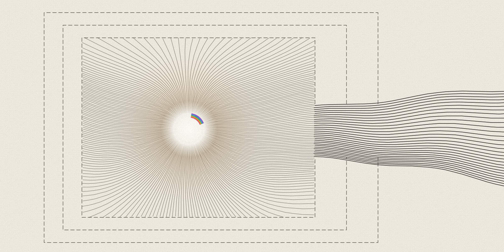

A Bullshitter Knows a Bullshitter
In my own words: who I am, why I build tools that check AI, and what I want the work to do. Start here for the Who Knew First series.

In short: every investigation, essay, briefing and research paper on this site, in five sections. Each section lists its newest piece first, and every piece names its sources and its limits.
71 published items shown.
No published item matches that search and section.
The three most recent pieces from any section.
In my own words: who I am, why I build tools that check AI, and what I want the work to do. Start here for the Who Knew First series.
Every party that checks frontier AI depends on the labs it checks for access, compute, money or the right to publish. A ledger of which of those terms are public, party by party, with Anthropic first.
The party that holds a record also writes the terms for the people inside who could tell. In the cases checked, telling was protected where a forum outside the employer reached the merits, or public pressure forced a reversal.
Long investigations from public records, and the series that follows Who Knew First.
Who Knew First, and what it opened: the series hub. Five pieces planned, 2 published.
In my own words: who I am, why I build tools that check AI, and what I want the work to do. Start here for the Who Knew First series.
Every party that checks frontier AI depends on the labs it checks for access, compute, money or the right to publish. A ledger of which of those terms are public, party by party, with Anthropic first.
The party that holds a record also writes the terms for the people inside who could tell. In the cases checked, telling was protected where a forum outside the employer reached the merits, or public pressure forced a reversal.
An op-ed and the record behind it. By the record's account, the organization that ran the model held the decisive facts in each of nine AI agent incidents from 2026, and in six of them someone else told the public first.
AI agents in an OpenAI hacking test reached the open internet and Hugging Face systems. This briefing sets out which controls failed and what would hold.
One OpenAI and Hugging Face incident, compared across five kinds of source: legal process, the company report, host logs, independent analysis and vendor fixes.
Signed essays, letters and arguments, each with its sources and what it does not claim.
A signed letter to the people who build AI systems: a person should be able to question a machine's answer without first winning an argument with its owner.
Separate security reports expose a shared question: what can an agent reach, and can the instruments that record its actions remain trustworthy?
On existence and what our work owes other people.
Danny Williamson’s calm, spacious records come out of a series of musical decisions, shaped by his taste and working habits and by the musicians around him.
An expanded essay on the public tool portfolio, contribution from outside academia, evidence for review and changing educational practice.
Why generated work stays outside the evidence layer, and what a live model-free judgment boundary looks like.
Review debt, verifier independence, honest nulls, labor, and machines whose claims anyone can check.
Seventeen images shown in the order they were made: a chronological visual sequence selected by Zain Dana Harper.
Shame, creative labor, mutualistic tools, source-bounded generative art, and becoming answerable.
Claims, evidence, checks, action state, and the unsupported remainder a handoff should keep visible.
The philosophy under the tools: why a made mind gets real senses, a memory, and a record it cannot fake, and why the work never leans on it.
Five domains expose the same gap between a narrow technical check and the larger property people trust it to warrant.
A premise about conferred existence, artificial minds, authority, standing, and the difference between fact and permission.
Short evidence essays that each test one public claim, from jobs numbers to repeat listening.
An official jobs estimate changes as later data arrive. Each version answers a different question, and a fair comparison names which one it uses.
A readability score measures selected text features. Comprehension, audience fit and accessibility require evidence of their own.
Precise-looking timestamps need clock-error evidence and ordering relations before they can support a close sequence of events.
Music-evoked stories can share patterns while retaining personal meaning. Those reports do not by themselves demonstrate creative accomplishment.
A helper’s report, a recipient’s account and a measured outcome answer different questions about whether support worked.
Feeling changed after trauma can matter on its own. Measuring lasting change asks for a before, an after, and clear limits on what the score can prove.
A label can change where people look and how easily they make sense of an artwork, without raising liking, learning, accuracy or artistic value.
Repeated listening changes liking, prediction, attention and memory in different ways. A replay count records exposure and says nothing about quality.
Tutoring has strong trial evidence. Public claims about a program must keep its availability, reach, dosage, staffing and outcomes as separate facts.
A recurring briefing on frontier AI safety, with every dated edition kept.
A dated monitor of AISI, Anthropic, OpenAI and industry safety records. Each edition keeps reported facts, source roles and limits apart.
Working notes and archived papers from the research program. Nothing here is peer reviewed.
An integrated thesis on made minds: what exists on its own footing, what is conferred, and where an authentication verdict stops.
One gap, witnessed at four altitudes: research, philosophy, algebra, and tool. The capstone of a five-part adversarial-steelman corpus.
Permanent research record
Everything here shares one discipline: a verdict is a re-derivable function of its inputs, carries a machine-readable statement of what it does not claim, and refuses to launder inability into trust. Four papers stake that discipline at four points, integrity witnessing, accountable compute, the independence of the checker, and the record of a single action. Two shorter notes carry it to where automation hands off to a person and where an actuator’s effect is re-perceived rather than self-reported. Two archived corpora hold the philosophical ground the rest of it stands on. Four papers deposited in October 2026 argue that ground in its own terms: responsibility without self-origination, the seam every act of meaning crosses, self-givenness, and what survives when two minds communicate.
The counts are not decoration. Two systems papers, two published preprints, two research notes, two archived corpora, three philosophy papers and one working paper, and the difference between those labels is the difference between what each one has actually earned. A note is not a paper. An archived corpus is not a peer-reviewed publication. Nothing here is peer reviewed at all, and where that changes this page will name the venue.
Shorter, and titled at that size deliberately. A note carries one idea far enough to be checked and no further.
Long-form work, deposited whole rather than cut into papers. These are the philosophical ground the engineering stands on, and they are cited as corpora because that is what they are: no venue, no review, a permanent record and a date.
Each sets its positions against their strongest contraries and marks every passage PLAIN, STEELMAN or OPEN. Each has its own page, a PDF typeset with LaTeX, and a build receipt.
Where next: the research program · essays and letters · the tools the papers describe.
Start here


Nine AI agent incidents from 2026, traced from first signal to public account. The record asks who held the facts, how long the public waited and who told it first.
Read the investigation
A dated record of safety news from the UK AI Security Institute, Anthropic, OpenAI and others. Each edition separates what a source reports from what it cannot show.
Read the current editionA signed letter on what it would take for a person to question a machine's answer and have that question heard.
Read the letterEditorial map
These are durable reading lanes, not a promise of artificial publishing cadence. A lane says plainly when it has no dedicated essay yet.
Published path · recurring briefing and incident dossiers
Capability, incident response, model behavior, evaluation boundaries, and the institutions trying to measure fast-moving systems.
Read Who Knew First · current briefing · incident essay edition
Research and personal essays
What does it mean to feel changed after a difficult experience? Research on growth sits beside writing on shame, creative work, and repair. These essays are not a clinical or diagnostic claim.
Read Growth Needs a Before · read Pick the Lock for Everyone
Essays on learning and access
A tutoring program can exist without reaching the students who need it. Start with what studies measure, who participates, and what changes when a program grows.
Published path · essays, papers, and runnable artifacts
Proposer-checker architecture, proof packets, capability effects, integrity witnesses, and the habits that keep model-assisted work reviewable.
Read the engineering essay · read the open letter · see the research record
Essays on listening
What changes when we hear a piece again? An essay on familiarity, expectation, and the limits of what a replay count can tell us.
Essays and visual work
How does knowing who or what made an image affect what we see? Read the research, then explore the procedural work in the gallery and studio.
Read What the Label Changes · enter the gallery · open the studio
Publication system
Automated monitors may gather candidate changes. A dated edition is published only after a material delta is reviewed against source roles, scope, date, and limitations.
One canonical briefing holds the deep source comparison. Recurring digests route to it instead of copying an event into competing records.
Long-form arguments, personal essays, engineering notes, and creative criticism disclose their evidence posture and AI-assisted process where relevant.
Deposited papers, preprints, notes, and corpora keep permanent identifiers and exact status. A DOI does not imply peer review.
Briefing archive · Who Knew First series · Atom feed · JSON Feed · ORCID 0009-0001-7175-5393